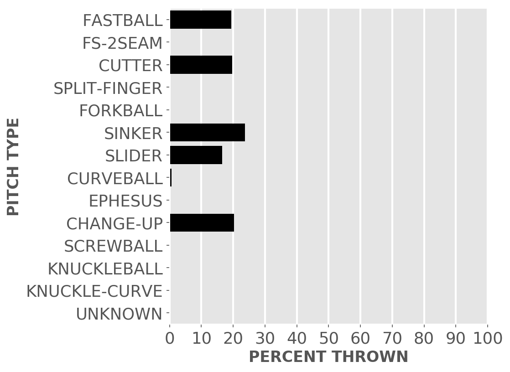
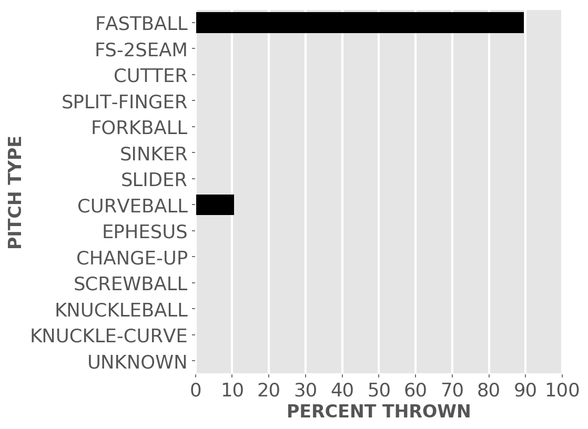
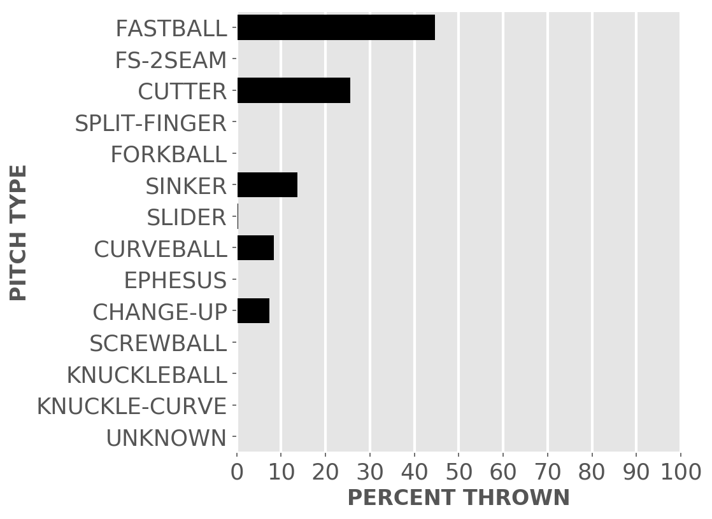
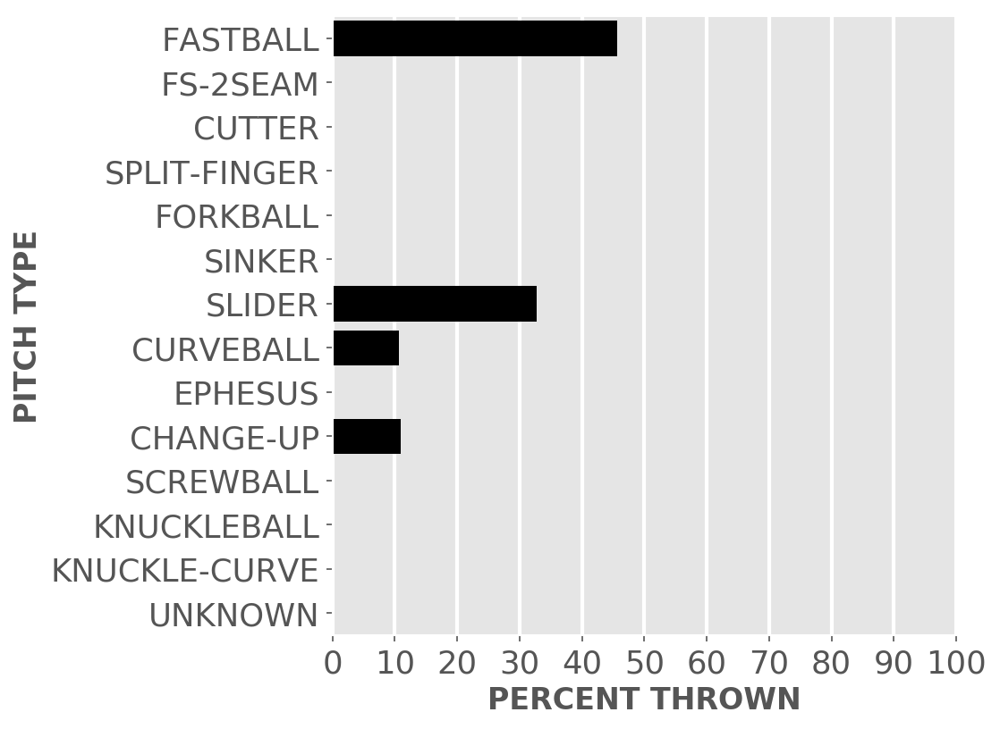
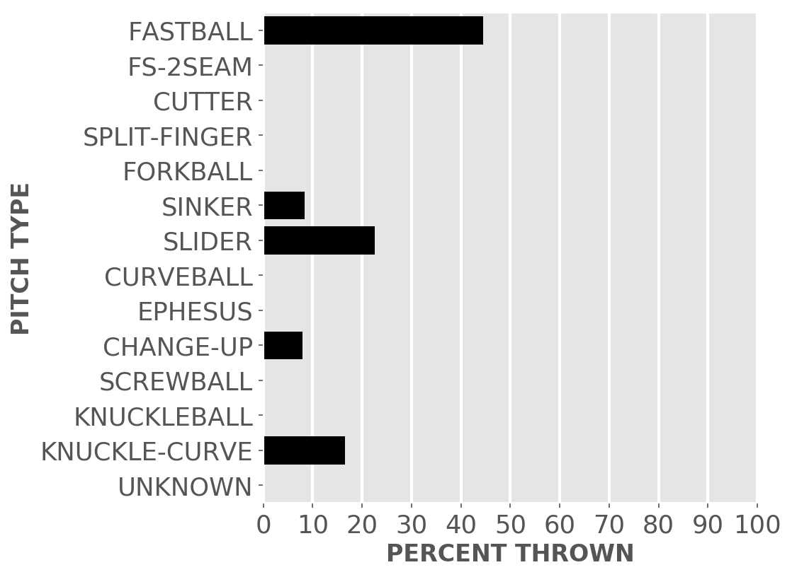

Chicago baseball
White Sox
A little-more-than-casual but not-very-wonky statistical look at the current season
Great expectations for the good guys in black.
Updated Sunday, Sept. 4, 2022, at 5:34 a.m. Pybaseball gathers these from Baseball-reference.com.
Games
JUMP TO TOP | BATTERS | PITCHERS
On Saturday, Sep 3, the Sox won a day game at home against the Twins, 13 to 0, in 9 innings. The winning pitcher was Cease, losing pitcher was Mahle. Save: None.
Next scheduled game: Sunday, Sep 4, a game at home with the Twins.
Summary results by team
| Team | Wins | Loses | Avg. Sox runs | Avg. runs against |
|---|---|---|---|---|
| Angels | 3 | 4 | 4.0 | 3.29 |
| Astros | 3 | 4 | 4.0 | 6.57 |
| Athletics | 2 | 1 | 3.33 | 3.33 |
| Blue Jays | 2 | 4 | 5.17 | 7.17 |
| Cubs | 3 | 1 | 3.25 | 3.25 |
| Diamondbacks | 0 | 3 | 3.0 | 6.67 |
| Dodgers | 1 | 2 | 4.67 | 5.0 |
| Giants | 3 | 0 | 6.33 | 2.33 |
| Guardians | 6 | 9 | 3.53 | 4.8 |
| Mariners | 2 | 1 | 3.33 | 3.67 |
| Orioles | 2 | 5 | 2.57 | 4.14 |
| Rangers | 3 | 4 | 5.0 | 5.14 |
| Rays | 4 | 2 | 3.5 | 4.33 |
| Red Sox | 4 | 2 | 3.83 | 6.33 |
| Rockies | 1 | 1 | 3.5 | 3.5 |
| Royals | 9 | 10 | 3.89 | 3.74 |
| Tigers | 10 | 3 | 5.92 | 2.46 |
| Twins | 6 | 6 | 5.83 | 4.33 |
| Yankees | 3 | 4 | 4.0 | 5.71 |
Batters
JUMP TO TOP | GAMES | PITCHERS
Click the link under a player's name to get up-to-speed on a player at bat.
Jose Abreu #79, 1B
| Status (A = active) | A |
| Bats/Throws | R/R |
| Plate appearances | 569 |
| At bats | 503 |
| Hits | 156 |
| Home runs | 14 |
| Batting Avg. | 0.31 |

| Runs | 73 |
| RBI | 63 |
| On-base percent | 0.385 |
| Weighted OBP | 0.368 |
| Slugging % | 0.455 |
| Stolen bases | 0 |
| Caught stealing | 0 |
Other measures
| Weighted runs above avg. (wRAA) | 26.0 |
| Runs Above Replacement (RAR) | 33.7 |
| Fielding RAR | 0.4 |
| Wins above replacement (WAR) | 3.5 |
Tim Anderson #7, SS
| Status (A = active) | D10 |
| Bats/Throws | R/R |
| Plate appearances | 351 |
| At bats | 332 |
| Hits | 100 |
| Home runs | 6 |
| Batting Avg. | 0.301 |
| Runs | 50 |
| RBI | 25 |
| On-base percent | 0.339 |
| Weighted OBP | 0.323 |
| Slugging % | 0.395 |
| Stolen bases | 13 |
| Caught stealing | 0 |
Other measures
| Weighted runs above avg. (wRAA) | 3.5 |
| Runs Above Replacement (RAR) | 19.3 |
| Fielding RAR | -2.2 |
| Wins above replacement (WAR) | 2.0 |
Elvis Andrus #1, SS
| Status (A = active) | A |
| Bats/Throws | R/R |
| Plate appearances | 447 |
| At bats | 412 |
| Hits | 100 |
| Home runs | 10 |
| Batting Avg. | 0.243 |

| Runs | 48 |
| RBI | 41 |
| On-base percent | 0.302 |
| Weighted OBP | 0.301 |
| Slugging % | 0.379 |
| Stolen bases | 8 |
| Caught stealing | 4 |
Other measures
| Weighted runs above avg. (wRAA) | -3.5 |
| Runs Above Replacement (RAR) | 21.2 |
| Fielding RAR | 0.1 |
| Wins above replacement (WAR) | 2.2 |
Adam Engel #15, RF
| Status (A = active) | A |
| Bats/Throws | R/R |
| Plate appearances | 224 |
| At bats | 210 |
| Hits | 48 |
| Home runs | 2 |
| Batting Avg. | 0.229 |

| Runs | 29 |
| RBI | 14 |
| On-base percent | 0.277 |
| Weighted OBP | 0.265 |
| Slugging % | 0.324 |
| Stolen bases | 11 |
| Caught stealing | 2 |
Other measures
| Weighted runs above avg. (wRAA) | -8.1 |
| Runs Above Replacement (RAR) | 0.3 |
| Fielding RAR | 0.2 |
| Wins above replacement (WAR) | 0.0 |
Leury Garcia #28, 2B
| Status (A = active) | A |
| Bats/Throws | S/R |
| Plate appearances | 305 |
| At bats | 290 |
| Hits | 63 |
| Home runs | 3 |
| Batting Avg. | 0.217 |

| Runs | 36 |
| RBI | 20 |
| On-base percent | 0.241 |
| Weighted OBP | 0.229 |
| Slugging % | 0.276 |
| Stolen bases | 1 |
| Caught stealing | 0 |
Other measures
| Weighted runs above avg. (wRAA) | -19.8 |
| Runs Above Replacement (RAR) | -8.5 |
| Fielding RAR | -1.0 |
| Wins above replacement (WAR) | -0.9 |
Romy Gonzalez #12, SS
| Status (A = active) | A |
| Bats/Throws | R/R |
| Plate appearances | 44 |
| At bats | 41 |
| Hits | 13 |
| Home runs | 1 |
| Batting Avg. | 0.317 |

| Runs | 7 |
| RBI | 6 |
| On-base percent | 0.341 |
| Weighted OBP | 0.337 |
| Slugging % | 0.439 |
| Stolen bases | 0 |
| Caught stealing | 1 |
Other measures
| Weighted runs above avg. (wRAA) | 0.9 |
| Runs Above Replacement (RAR) | 3.1 |
| Fielding RAR | 0.8 |
| Wins above replacement (WAR) | 0.3 |
Yasmani Grandal #24, C
| Status (A = active) | A |
| Bats/Throws | S/R |
| Plate appearances | 302 |
| At bats | 261 |
| Hits | 54 |
| Home runs | 4 |
| Batting Avg. | 0.207 |
| Runs | 12 |
| RBI | 23 |
| On-base percent | 0.311 |
| Weighted OBP | 0.272 |
| Slugging % | 0.276 |
| Stolen bases | 1 |
| Caught stealing | 0 |
Other measures
| Weighted runs above avg. (wRAA) | -9.3 |
| Runs Above Replacement (RAR) | -0.6 |
| Fielding RAR | 3.3 |
| Wins above replacement (WAR) | -0.1 |
Josh Harrison #5, 2B
| Status (A = active) | A |
| Bats/Throws | R/R |
| Plate appearances | 362 |
| At bats | 328 |
| Hits | 82 |
| Home runs | 6 |
| Batting Avg. | 0.25 |

| Runs | 42 |
| RBI | 24 |
| On-base percent | 0.314 |
| Weighted OBP | 0.303 |
| Slugging % | 0.366 |
| Stolen bases | 1 |
| Caught stealing | 1 |
Other measures
| Weighted runs above avg. (wRAA) | -2.3 |
| Runs Above Replacement (RAR) | 11.2 |
| Fielding RAR | 2.3 |
| Wins above replacement (WAR) | 1.2 |
Adam Haseley #51, CF
| Status (A = active) | A |
| Bats/Throws | L/L |
| Plate appearances | 25 |
| At bats | 21 |
| Hits | 5 |
| Home runs | 0 |
| Batting Avg. | 0.238 |
| Runs | 4 |
| RBI | 2 |
| On-base percent | 0.333 |
| Weighted OBP | 0.271 |
| Slugging % | 0.238 |
| Stolen bases | 0 |
| Caught stealing | 0 |
Other measures
| Weighted runs above avg. (wRAA) | -0.8 |
| Runs Above Replacement (RAR) | -0.1 |
| Fielding RAR | 0.0 |
| Wins above replacement (WAR) | 0.0 |
Eloy Jimenez #74, LF
| Status (A = active) | A |
| Bats/Throws | R/R |
| Plate appearances | 220 |
| At bats | 195 |
| Hits | 59 |
| Home runs | 9 |
| Batting Avg. | 0.303 |

| Runs | 23 |
| RBI | 33 |
| On-base percent | 0.373 |
| Weighted OBP | 0.369 |
| Slugging % | 0.472 |
| Stolen bases | 0 |
| Caught stealing | 0 |
Other measures
| Weighted runs above avg. (wRAA) | 10.2 |
| Runs Above Replacement (RAR) | 11.7 |
| Fielding RAR | -1.8 |
| Wins above replacement (WAR) | 1.2 |
Yoan Moncada #10, 3B
| Status (A = active) | D10 |
| Bats/Throws | S/R |
| Plate appearances | 324 |
| At bats | 294 |
| Hits | 58 |
| Home runs | 7 |
| Batting Avg. | 0.197 |

| Runs | 28 |
| RBI | 40 |
| On-base percent | 0.269 |
| Weighted OBP | 0.26 |
| Slugging % | 0.313 |
| Stolen bases | 0 |
| Caught stealing | 0 |
Other measures
| Weighted runs above avg. (wRAA) | -13.1 |
| Runs Above Replacement (RAR) | 3.0 |
| Fielding RAR | 3.7 |
| Wins above replacement (WAR) | 0.3 |
Mark Payton #46, RF
| Status (A = active) | A |
| Bats/Throws | L/L |
| Plate appearances | 1 |
| At bats | 0 |
| Hits | 0 |
| Home runs | 0 |
| Batting Avg. | 0.0 |
| Runs | 1 |
| RBI | 0 |
| On-base percent | 1.0 |
| Weighted OBP | 0.69 |
| Slugging % | 0.0 |
| Stolen bases | 0 |
| Caught stealing | 0 |
Other measures
| Weighted runs above avg. (wRAA) | 0.3 |
| Runs Above Replacement (RAR) | 0.3 |
| Fielding RAR | |
| Wins above replacement (WAR) | 0.0 |
Luis Robert #88, CF
| Status (A = active) | PL |
| Bats/Throws | R/R |
| Plate appearances | 378 |
| At bats | 357 |
| Hits | 107 |
| Home runs | 12 |
| Batting Avg. | 0.3 |

| Runs | 54 |
| RBI | 56 |
| On-base percent | 0.336 |
| Weighted OBP | 0.342 |
| Slugging % | 0.451 |
| Stolen bases | 11 |
| Caught stealing | 3 |
Other measures
| Weighted runs above avg. (wRAA) | 9.5 |
| Runs Above Replacement (RAR) | 24.2 |
| Fielding RAR | -3.4 |
| Wins above replacement (WAR) | 2.5 |
Gavin Sheets #32, 1B
| Status (A = active) | A |
| Bats/Throws | L/L |
| Plate appearances | 328 |
| At bats | 300 |
| Hits | 76 |
| Home runs | 12 |
| Batting Avg. | 0.253 |

| Runs | 26 |
| RBI | 42 |
| On-base percent | 0.311 |
| Weighted OBP | 0.323 |
| Slugging % | 0.43 |
| Stolen bases | 0 |
| Caught stealing | 0 |
Other measures
| Weighted runs above avg. (wRAA) | 3.3 |
| Runs Above Replacement (RAR) | -0.1 |
| Fielding RAR | -7.3 |
| Wins above replacement (WAR) | 0.0 |
Andrew Vaughn #25, LF
| Status (A = active) | A |
| Bats/Throws | R/R |
| Plate appearances | 461 |
| At bats | 423 |
| Hits | 122 |
| Home runs | 15 |
| Batting Avg. | 0.288 |

| Runs | 54 |
| RBI | 63 |
| On-base percent | 0.338 |
| Weighted OBP | 0.346 |
| Slugging % | 0.459 |
| Stolen bases | 0 |
| Caught stealing | 0 |
Other measures
| Weighted runs above avg. (wRAA) | 13.1 |
| Runs Above Replacement (RAR) | 5.9 |
| Fielding RAR | -13.6 |
| Wins above replacement (WAR) | 0.6 |
Seby Zavala #44, C
| Status (A = active) | A |
| Bats/Throws | R/R |
| Plate appearances | 174 |
| At bats | 152 |
| Hits | 42 |
| Home runs | 2 |
| Batting Avg. | 0.276 |

| Runs | 17 |
| RBI | 20 |
| On-base percent | 0.349 |
| Weighted OBP | 0.327 |
| Slugging % | 0.388 |
| Stolen bases | 0 |
| Caught stealing | 0 |
Other measures
| Weighted runs above avg. (wRAA) | 2.2 |
| Runs Above Replacement (RAR) | 16.3 |
| Fielding RAR | 5.4 |
| Wins above replacement (WAR) | 1.7 |
Pitchers
Click the link under a player's name to get acquainted with who's on the mound. Click here for a description of these stats and more.
Dylan Cease #84, P
| Status (A = active) | A |
| Bats/Throws | R/R |
| Wins | 13 |
| Losses | 6 |
| ERA | 2.13 |
| Caught stealing | 27 |
| Complete games | 1 |
| Shutouts | 1 |
| Saves | 0 |
| Blown saves | 0 |
Pitch types

Fastball = Four Seam and Unclassified Fastballs; FS-2seam = Two Seam Fastballs; Ephesuses are a really slow ball
| Average innings pitched | 5.8 |
| Strikeouts per 9 innings | 11.37 |
| Walks per 9 innings | 3.69 |
| Walks, hits per inning (WHIP) | 1.08 |
| Percent left on base | 81.8 |
| Percent first pitch strike | 58.6 |
Other measures
| Avg. run support | 84.0 |
| Opponents batting average | 0.185 |
| Batting avg. on balls in play | 0.256 |
| Fielding independent pitching | 3.03 |
| Win probability added (WPA) | 2.53 |
| Runs above replacement | 34.6 |
| WAR | 3.8 |
Johnny Cueto #47, P
| Status (A = active) | A |
| Bats/Throws | R/R |
| Wins | 7 |
| Losses | 6 |
| ERA | 2.93 |
| Caught stealing | 19 |
| Complete games | 1 |
| Shutouts | 0 |
| Saves | 0 |
| Blown saves | 0 |
Pitch types
Fastball = Four Seam and Unclassified Fastballs; FS-2seam = Two Seam Fastballs; Ephesuses are a really slow ball
| Average innings pitched | 6.4 |
| Strikeouts per 9 innings | 5.72 |
| Walks per 9 innings | 1.88 |
| Walks, hits per inning (WHIP) | 1.17 |
| Percent left on base | 79.7 |
| Percent first pitch strike | 67.2 |
Other measures
| Avg. run support | 64.0 |
| Opponents batting average | 0.253 |
| Batting avg. on balls in play | 0.28 |
| Fielding independent pitching | 3.88 |
| Win probability added (WPA) | 0.36 |
| Runs above replacement | 17.3 |
| WAR | 1.8 |
Jake Diekman #55, P
| Status (A = active) | A |
| Bats/Throws | R/L |
| Wins | 5 |
| Losses | 3 |
| ERA | 4.31 |
| Caught stealing | 0 |
| Complete games | 0 |
| Shutouts | 0 |
| Saves | 1 |
| Blown saves | 3 |
Pitch types

Fastball = Four Seam and Unclassified Fastballs; FS-2seam = Two Seam Fastballs; Ephesuses are a really slow ball
| Average innings pitched | 0.8 |
| Strikeouts per 9 innings | 12.75 |
| Walks per 9 innings | 7.13 |
| Walks, hits per inning (WHIP) | 1.6 |
| Percent left on base | 75.8 |
| Percent first pitch strike | 62.2 |
Other measures
| Avg. run support | 34.0 |
| Opponents batting average | 0.222 |
| Batting avg. on balls in play | 0.317 |
| Fielding independent pitching | 5.06 |
| Win probability added (WPA) | -0.59 |
| Runs above replacement | -5.9 |
| WAR | -0.6 |
Matt Foster #63, P
| Status (A = active) | A |
| Bats/Throws | R/R |
| Wins | 1 |
| Losses | 2 |
| ERA | 4.4 |
| Caught stealing | 0 |
| Complete games | 0 |
| Shutouts | 0 |
| Saves | 1 |
| Blown saves | 0 |
Pitch types

Fastball = Four Seam and Unclassified Fastballs; FS-2seam = Two Seam Fastballs; Ephesuses are a really slow ball
| Average innings pitched | 0.9 |
| Strikeouts per 9 innings | 8.4 |
| Walks per 9 innings | 3.4 |
| Walks, hits per inning (WHIP) | 1.33 |
| Percent left on base | 67.8 |
| Percent first pitch strike | 64.2 |
Other measures
| Avg. run support | 33.0 |
| Opponents batting average | 0.244 |
| Batting avg. on balls in play | 0.289 |
| Fielding independent pitching | 4.12 |
| Win probability added (WPA) | 0.27 |
| Runs above replacement | 1.5 |
| WAR | 0.2 |
Lucas Giolito #27, P
| Status (A = active) | A |
| Bats/Throws | R/R |
| Wins | 10 |
| Losses | 8 |
| ERA | 5.27 |
| Caught stealing | 24 |
| Complete games | 0 |
| Shutouts | 0 |
| Saves | 0 |
| Blown saves | 0 |
Pitch types

Fastball = Four Seam and Unclassified Fastballs; FS-2seam = Two Seam Fastballs; Ephesuses are a really slow ball
| Average innings pitched | 5.3 |
| Strikeouts per 9 innings | 9.98 |
| Walks per 9 innings | 3.38 |
| Walks, hits per inning (WHIP) | 1.5 |
| Percent left on base | 70.3 |
| Percent first pitch strike | 60.7 |
Other measures
| Avg. run support | 79.0 |
| Opponents batting average | 0.283 |
| Batting avg. on balls in play | 0.355 |
| Fielding independent pitching | 4.28 |
| Win probability added (WPA) | -0.88 |
| Runs above replacement | 10.7 |
| WAR | 1.1 |
Kendall Graveman #49, P
| Status (A = active) | A |
| Bats/Throws | R/R |
| Wins | 3 |
| Losses | 3 |
| ERA | 2.6 |
| Caught stealing | 0 |
| Complete games | 0 |
| Shutouts | 0 |
| Saves | 6 |
| Blown saves | 5 |
Pitch types

Fastball = Four Seam and Unclassified Fastballs; FS-2seam = Two Seam Fastballs; Ephesuses are a really slow ball
| Average innings pitched | 1.0 |
| Strikeouts per 9 innings | 8.95 |
| Walks per 9 innings | 3.58 |
| Walks, hits per inning (WHIP) | 1.34 |
| Percent left on base | 79.4 |
| Percent first pitch strike | 61.6 |
Other measures
| Avg. run support | 18.0 |
| Opponents batting average | 0.243 |
| Batting avg. on balls in play | 0.305 |
| Fielding independent pitching | 3.55 |
| Win probability added (WPA) | 0.58 |
| Runs above replacement | 4.3 |
| WAR | 0.5 |
Josh Harrison #5, 2B
| Status (A = active) | A |
| Bats/Throws | R/R |
| Wins | 0 |
| Losses | 0 |
| ERA | 18.0 |
| Caught stealing | 0 |
| Complete games | 0 |
| Shutouts | 0 |
| Saves | 0 |
| Blown saves | 0 |
Pitch types
Fastball = Four Seam and Unclassified Fastballs; FS-2seam = Two Seam Fastballs; Ephesuses are a really slow ball
| Average innings pitched | 1.0 |
| Strikeouts per 9 innings | 6.0 |
| Walks per 9 innings | 6.0 |
| Walks, hits per inning (WHIP) | 3.67 |
| Percent left on base | 52.1 |
| Percent first pitch strike | 61.1 |
Other measures
| Avg. run support | 0.0 |
| Opponents batting average | 0.563 |
| Batting avg. on balls in play | 0.615 |
| Fielding independent pitching | 8.12 |
| Win probability added (WPA) | 0.0 |
| Runs above replacement | -0.7 |
| WAR | -0.1 |
Liam Hendriks #31, P
| Status (A = active) | A |
| Bats/Throws | R/R |
| Wins | 3 |
| Losses | 3 |
| ERA | 3.26 |
| Caught stealing | 0 |
| Complete games | 0 |
| Shutouts | 0 |
| Saves | 29 |
| Blown saves | 4 |
Pitch types

Fastball = Four Seam and Unclassified Fastballs; FS-2seam = Two Seam Fastballs; Ephesuses are a really slow ball
| Average innings pitched | 1.0 |
| Strikeouts per 9 innings | 12.83 |
| Walks per 9 innings | 2.11 |
| Walks, hits per inning (WHIP) | 1.09 |
| Percent left on base | 75.8 |
| Percent first pitch strike | 65.8 |
Other measures
| Avg. run support | 6.0 |
| Opponents batting average | 0.221 |
| Batting avg. on balls in play | 0.308 |
| Fielding independent pitching | 2.97 |
| Win probability added (WPA) | 0.9 |
| Runs above replacement | 9.9 |
| WAR | 1.0 |
Joe Kelly #17, P
| Status (A = active) | A |
| Bats/Throws | R/R |
| Wins | 1 |
| Losses | 3 |
| ERA | 7.45 |
| Caught stealing | 1 |
| Complete games | 0 |
| Shutouts | 0 |
| Saves | 1 |
| Blown saves | 0 |
Pitch types

Fastball = Four Seam and Unclassified Fastballs; FS-2seam = Two Seam Fastballs; Ephesuses are a really slow ball
| Average innings pitched | 0.9 |
| Strikeouts per 9 innings | 11.48 |
| Walks per 9 innings | 6.21 |
| Walks, hits per inning (WHIP) | 1.76 |
| Percent left on base | 56.6 |
| Percent first pitch strike | 52.1 |
Other measures
| Avg. run support | 12.0 |
| Opponents batting average | 0.265 |
| Batting avg. on balls in play | 0.372 |
| Fielding independent pitching | 3.84 |
| Win probability added (WPA) | -0.33 |
| Runs above replacement | 1.0 |
| WAR | 0.1 |
Michael Kopech #34, P
| Status (A = active) | D15 |
| Bats/Throws | R/R |
| Wins | 4 |
| Losses | 9 |
| ERA | 3.58 |
| Caught stealing | 23 |
| Complete games | 0 |
| Shutouts | 0 |
| Saves | 0 |
| Blown saves | 0 |
Pitch types

Fastball = Four Seam and Unclassified Fastballs; FS-2seam = Two Seam Fastballs; Ephesuses are a really slow ball
| Average innings pitched | 4.8 |
| Strikeouts per 9 innings | 7.97 |
| Walks per 9 innings | 4.47 |
| Walks, hits per inning (WHIP) | 1.21 |
| Percent left on base | 75.8 |
| Percent first pitch strike | 56.6 |
Other measures
| Avg. run support | 38.0 |
| Opponents batting average | 0.198 |
| Batting avg. on balls in play | 0.228 |
| Fielding independent pitching | 4.45 |
| Win probability added (WPA) | 0.74 |
| Runs above replacement | 10.2 |
| WAR | 1.1 |
Jimmy Lambert #58, P
| Status (A = active) | A |
| Bats/Throws | R/R |
| Wins | 1 |
| Losses | 2 |
| ERA | 2.75 |
| Caught stealing | 2 |
| Complete games | 0 |
| Shutouts | 0 |
| Saves | 0 |
| Blown saves | 1 |
Pitch types

Fastball = Four Seam and Unclassified Fastballs; FS-2seam = Two Seam Fastballs; Ephesuses are a really slow ball
| Average innings pitched | 1.2 |
| Strikeouts per 9 innings | 8.25 |
| Walks per 9 innings | 4.0 |
| Walks, hits per inning (WHIP) | 1.33 |
| Percent left on base | 80.1 |
| Percent first pitch strike | 62.6 |
Other measures
| Avg. run support | 7.0 |
| Opponents batting average | 0.232 |
| Batting avg. on balls in play | 0.291 |
| Fielding independent pitching | 3.43 |
| Win probability added (WPA) | 0.44 |
| Runs above replacement | 4.6 |
| WAR | 0.5 |
Reynaldo Lopez #40, P
| Status (A = active) | A |
| Bats/Throws | R/R |
| Wins | 5 |
| Losses | 3 |
| ERA | 2.92 |
| Caught stealing | 1 |
| Complete games | 0 |
| Shutouts | 0 |
| Saves | 0 |
| Blown saves | 4 |
Pitch types

Fastball = Four Seam and Unclassified Fastballs; FS-2seam = Two Seam Fastballs; Ephesuses are a really slow ball
| Average innings pitched | 1.1 |
| Strikeouts per 9 innings | 9.63 |
| Walks per 9 innings | 1.55 |
| Walks, hits per inning (WHIP) | 1.01 |
| Percent left on base | 63.0 |
| Percent first pitch strike | 61.8 |
Other measures
| Avg. run support | 31.0 |
| Opponents batting average | 0.223 |
| Batting avg. on balls in play | 0.312 |
| Fielding independent pitching | 1.55 |
| Win probability added (WPA) | 0.02 |
| Runs above replacement | 17.5 |
| WAR | 1.9 |
Lance Lynn #33, P
| Status (A = active) | A |
| Bats/Throws | S/R |
| Wins | 4 |
| Losses | 5 |
| ERA | 4.7 |
| Caught stealing | 15 |
| Complete games | 0 |
| Shutouts | 0 |
| Saves | 0 |
| Blown saves | 0 |
Pitch types
Fastball = Four Seam and Unclassified Fastballs; FS-2seam = Two Seam Fastballs; Ephesuses are a really slow ball
| Average innings pitched | 5.6 |
| Strikeouts per 9 innings | 9.71 |
| Walks per 9 innings | 1.39 |
| Walks, hits per inning (WHIP) | 1.14 |
| Percent left on base | 67.0 |
| Percent first pitch strike | 63.6 |
Other measures
| Avg. run support | 45.0 |
| Opponents batting average | 0.249 |
| Batting avg. on balls in play | 0.295 |
| Fielding independent pitching | 4.14 |
| Win probability added (WPA) | -0.42 |
| Runs above replacement | 8.4 |
| WAR | 0.9 |
Davis Martin #65, P
| Status (A = active) | A |
| Bats/Throws | L/R |
| Wins | 2 |
| Losses | 4 |
| ERA | 4.09 |
| Caught stealing | 5 |
| Complete games | 0 |
| Shutouts | 0 |
| Saves | 0 |
| Blown saves | 1 |
Pitch types
Fastball = Four Seam and Unclassified Fastballs; FS-2seam = Two Seam Fastballs; Ephesuses are a really slow ball
| Average innings pitched | 4.4 |
| Strikeouts per 9 innings | 6.14 |
| Walks per 9 innings | 3.07 |
| Walks, hits per inning (WHIP) | 1.25 |
| Percent left on base | 70.0 |
| Percent first pitch strike | 60.0 |
Other measures
| Avg. run support | 22.0 |
| Opponents batting average | 0.238 |
| Batting avg. on balls in play | 0.263 |
| Fielding independent pitching | 4.39 |
| Win probability added (WPA) | -0.87 |
| Runs above replacement | 2.7 |
| WAR | 0.3 |
Jose Ruiz #66, P
| Status (A = active) | A |
| Bats/Throws | R/R |
| Wins | 1 |
| Losses | 0 |
| ERA | 4.44 |
| Caught stealing | 0 |
| Complete games | 0 |
| Shutouts | 0 |
| Saves | 0 |
| Blown saves | 0 |
Pitch types

Fastball = Four Seam and Unclassified Fastballs; FS-2seam = Two Seam Fastballs; Ephesuses are a really slow ball
| Average innings pitched | 0.9 |
| Strikeouts per 9 innings | 9.95 |
| Walks per 9 innings | 4.62 |
| Walks, hits per inning (WHIP) | 1.4 |
| Percent left on base | 73.5 |
| Percent first pitch strike | 57.3 |
Other measures
| Avg. run support | 24.0 |
| Opponents batting average | 0.232 |
| Batting avg. on balls in play | 0.29 |
| Fielding independent pitching | 4.25 |
| Win probability added (WPA) | -0.26 |
| Runs above replacement | -0.3 |
| WAR | 0.0 |
Vince Velasquez #23, P
| Status (A = active) | A |
| Bats/Throws | R/R |
| Wins | 3 |
| Losses | 3 |
| ERA | 5.12 |
| Caught stealing | 8 |
| Complete games | 0 |
| Shutouts | 0 |
| Saves | 0 |
| Blown saves | 0 |
Pitch types
Fastball = Four Seam and Unclassified Fastballs; FS-2seam = Two Seam Fastballs; Ephesuses are a really slow ball
| Average innings pitched | 3.2 |
| Strikeouts per 9 innings | 7.45 |
| Walks per 9 innings | 2.95 |
| Walks, hits per inning (WHIP) | 1.29 |
| Percent left on base | 66.7 |
| Percent first pitch strike | 60.2 |
Other measures
| Avg. run support | 34.0 |
| Opponents batting average | 0.243 |
| Batting avg. on balls in play | 0.267 |
| Fielding independent pitching | 4.79 |
| Win probability added (WPA) | -0.08 |
| Runs above replacement | 0.9 |
| WAR | 0.1 |
JUMP TO TOP